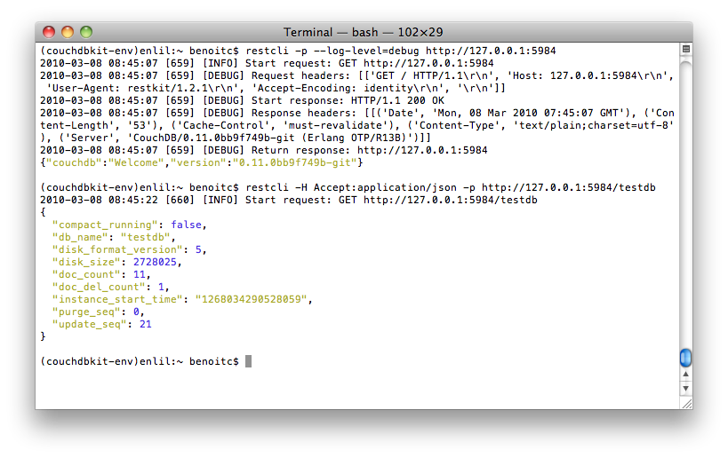

Restkit integrate a simple HTTP client in command line named restcli allowing you to perform requests.
Usage:
$ restcli --help
Usage: 'restcli [options] url [METHOD] [filename]'
Options:
-H HEADERS, --header=HEADERS
http string header in the form of Key:Value. For
example: "Accept: application/json"
-X METHOD, --request=METHOD
http request method
--follow-redirect
-S, --server-response
print server response
-p, --prettify Prettify display
--log-level=LOG_LEVEL
Log level below which to silence messages. [info]
-i FILE, --input=FILE
the name of the file to read from
-o OUTPUT, --output=OUTPUT
the name of the file to write to
--version show program's version number and exit
-h, --help show this help message and exit
To have better prettyfication, make sure you have pygments, tidy and simplejson (or python2.6) installed. They may be already installed on your machine.